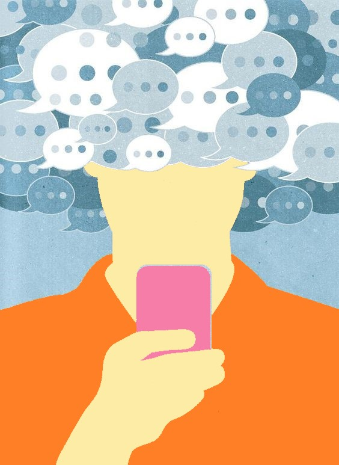

Facultad de Psicología
UNIVERSIDAD DE BUENOS AIRES

Licenciatura en Psicología
Teoría y Técnicas de Grupos - Cátedra I Código: 63
Prof: A designar
- Comisión: 16
- Prof: Maximilano Frydman y Tamara Dmytrow
Alumnes:
- Cunto, Abel
- Olivera, Camila
- Zabala, Florencia Janis

Surgió en mis pensamientos, como idea-potencia (Deleuze, G. y Guattari, F. 1988), sobre la locura de que a pesar de estar en un mismo lugar, misma computadora, misma taza, mismas manos, mismos lentes, mismo póster de Black Mirror, no era el mismo ser: era alguien en clase, era alguien más en la cita, era un astronauta colorado.
Pensé que para responder ese mensaje invitándome a jugar “Among Us” no podía ser le misme: estaba siendo multiplicade por algoritmos. Múltiples agenciamientos o agenciamientos multiplicados (Pavlovsky, E. y Kesselman, H, 2000). Varies en un solo alguien: liste para compartir un espacio sensual virtual y encontrarnos allí lo mejor posible con el cuerpo del otre; un muñequito simpático color rojo; un estudiante de Psicología de la UBA, un parteniere sextual. Yo era muches, diferentes, más no opuestos.

Ese mensaje me cristalizó, y al decir de Pavlovsky, E. y Kesselman, H. (2000) se hizo rostro, cortó el flujo, ¿debía responder ahora? Sentía que sí. Pero para perseguir mi deseo de jugar con mis amigues dentro de una hora, debía salir completamente del territorio que habíamos co-creado con Milán. La línea de fuga, como notificación de pantalla fugaz, fue suficiente para diversificarme y distribuirme. ¿Es posible estar tieso y estar amoldándome a mi entorno al mismo tiempo? Y sí, pensé en el pasar del tiempo, lo que provoca encontrarse sojuzgado por él, y sus múltiples maneras de controlar mi subjetividad (Deleuze, G., 2009), acatar sus órdenes para poder hacer en ese día posmoderno todo lo que me proponía. Una bienvenida a la abrumante y densa obligación de considerar al tiempo constantemente. Pensé también en qué distinto sería si pensáramos el tiempo de otra manera (Castoriadis, C. 1998) y qué tan diferente sería pensarme “por” el tiempo y no “en” él. ¡Pero basta! Para ser eficaz y hacer de mi tiempo algo útil a los mandatos esperados debo concentrarme en lo importante.
La clase rutinaria y dictatorial, al decir de Varela, J. (1997), sobre las pedagogías psicológicas, termina siempre en el mismo horario. Mi intercambio erótico con Milán debía terminar en una hora, para que las siguientes dos horas pueda dedicarlas a jugar con mis amigues, y luego dormir para despertarme al otro día temprano. Estaba siendo perseguide por el reloj, y ese sí que es rápido. ¿Cómo hacer que la energía vuelva a fluir? ¿Cómo librarse de la rostridad (Pavlovsky, E. y Kesselman, H., 2000) de las notificaciones? ¿Cómo volver a conectarme con Milán y su imagen en nuestro escenario de sensualidad? Era un corte que no había sido previsto cuando elegimos la hora de encontrarnos. Como decía Foucault, M. (1987) el tiempo tiene una utilidad, sino no tiene sentido económicamente hablando. ¿Y el sexo, es económico? (Fernández A. M. (1993)
Pero mientras el tiempo pasa, no puedo evitar esta sensación abrasante de calor virtual que nos invade ahora, de sentirnos fritados por un microondas. Al decir de Gergen, K. J. (1996) relaciones intensas, tan rápidas como la mejor banda ancha y tan cortas como un monoambiente-prisión-disciplinario Foucault, M. (1987) al cual que entré voluntariamente, es más, ahorré para eso. El nuevo panóptico es una microlente, que apunta a mi frente. Posiblemente está cargada de coerciones.
En este territorio-agenciamiento, forzado por un virus, donde estamos distribuides y multiplicades, paradojalmente me encuentro y nos encontramos más encerrades que nunca e insertos en un ciclo sin fin de mandamientos implícitos, que como afirmó Castoriadis, C. (1998) son significaciones imaginarias creadas por nosotros mismos más no Deus ex machina. Estamos encerrades en una idea de espacio, una clausura virtual del "¿dónde estoy?".
Como decía Foucault, cada espacio tiene su motivo de ser. Ser útil, sus reglamentos y su mejor forma de hacer uso del espacio y funcionar así, para ser eficaces. Es por eso que queda fuera de la pantalla-lugar que en mitad de mi clase, dejé escapar una mueca desorbitante que puede develar mi resistencia (Pavlovsky, E. y Kesselman, H. 2000) frente al panóptico, Foucault, M. (1987), o que al leer un mensaje de Milán brote de mi un suspiro rebelde, que me advierte de fijarme si el micrófono está encendido. ¿Qué es correcto frente a mi propia pc y qué no? ¿Es mi pc un reemplazo de aquella instrucción militar de la que habló Foucault, M. (1987) en “Los cuerpos dóciles”? ¿Acaso sonreír para la cámara es igual al saludo número 1?
Vuelvo al ser-estudiante. Me reincorporo, acomodo mi mirada, mi cara de interés, ¿engaño a alguien? ¿Los demás estarán sin-estar en esta clase como yo?
Tantos roles actuados en un mismo momento, pocas veces me había sentido así antes de la pandemia.
Si este monoambiente adoctrinador es mi gran microondas (Gergen, K. J., 1996) personalizado, que compré con mi esfuerzo de humano moderno temprano, al igual que esta laptop desde la que escribo, soy entonces un refrito de la peor secuela de una comedia romántica sin final feliz. Absorbide por el progreso en forma de virus (¿informático?). Si Cortazar no se enoja, cabeza tomada (Cortazar, cuento corto, casa tomada).
Ya no soy dueñe de mi propio yo, pues tengo Facebook, Twitter, Instagram, y he mandado tantas fotos que seguro una parte de mí está distribuida en muchos de esos celulares. Debo responder a esos perfiles, que también son yo. Es decir, tengo una obligación conmigo misme de cultivar una relación con mi propio self ( sí, eso es un oxímoron). De atender ese perfil como si fuera un otre real o una versión 2.0 y más abstracta de mí mismo. Pero si Bruner, J. (1991) tenía razón y mi yo es la red constituída entre otres, o se entrama en ella, ¿qué yo forma mi “yo distribuido” o triturado si no hay cuerpos? ¿Soy datos? ¿Soy audio y video? ¿Pixeles? Soy mi propia “conserva cultural” virtual (Albizuri de García, O. 1986), conserva posiblemente agenciada según qué sistema operativo sea el territorio de mi psicosis.
¿Soy según qué plataformas de despedazamiento subjetivo sepa usar o sepan usarme (Deleuze, G. 2009) ? ¿O soy lo que elijo mostrar y cómo lo muestro? Así como decía Castoriadis, C. (1998), el imaginario social crea la subjetividad y la sociedad es creada gracias a las subjetividades. ¿Podría ser que mi yo es creado por las redes y yo las creo a ellas? ¿Puede ser una pc un magma de chips agenciados por constantes actualizaciones de software tiranas?

Bibliografía:
- - Albizuri de García, O. (1986) Contribuciones del psicodrama a la psicoterapia de grupos. En Lo Grupal 3. Buenos Aires: Búsqueda.
- - Bruner, J. (1991). La autobiografıá del yo (Capı́tulo 4). En Actos de significado. Madrid: Alianza
- - Castoriadis, C. (1998). Lo imaginario: la creación en el dominio socio-histórico En C. Castoriadis. Los dominios del Hombre. Encrucijadas del laberinto. Barcelona: Gedisa.
- - Cortazar, Julio (1970). Casa Tomada. En: Bestiario. – 11a ed. – Buenos Aires: editorial Sudamericana.
- - Deleuze, G. y Guattari, F. (1988). Rizoma. EnG. Deleuze y F. Guattari. Mil Mesetas (Cap.1). Valencia: Pre-Textos.
- - Fernández A. M. (1993). Madres en más, mujeres en menos: los mitos sociales de la maternidad. En A.M. Fernández. La mujer de la ilusión (Cap.7). Buenos Aires: Paidós.
- - Foucault, M.: Vigilar y castigar, México, Siglo XXI, 1987; Cap. 3. "Las disciplinas” CAP Los cuerpos dóciles.
- - Gergen, K. J. (1996). La psicología social y la revolución errónea. En Realidades y Relaciones. Barcelona: Paidós.
- - Pavlovsky, E. y Kesselman, H. (2000). La Multiplicación Dramática. Buenos Aires: Galerna
- - Varela, J. (1997). "Categorías espacio temporales y socialización escolar: del individualismo al narcisismo" en Escuela, Poder y Subjetivación, Madrid, La Piqueta.